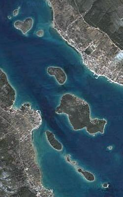

turanj
Turanj is the center of the world. My world. It is simply center of my memories from childhood and adolescence until now. There were some bad memories too, but children have their own way of going through war. But there is much more good memories, and this kind is stronger and much more clear. Then, there is the sea. Growing up near (and with) the sea makes you a bit different person. And Turanj is placed on Adriatic sea, in an idyllical Mediterranean ambient and my house is only 50 meters from the coast.
{kind=link}
If you want to see more about Turanj, try some of these:
- interactive satellite imagery,
- Turanj town plan with street names (M 1:5000, 200 kB),
- sea navigation map (M 1:100000, 3.3 MB),
- topographic map (M 1:25000, 1.9 MB).
{kind=link}
{kind=link}
Turanj is an attractive tourist village, with population of about 1200, placed on a very beautiful spot surrounded by 16 small islands. It spreads over about 3 miles of Pašman canal coast. It is placed between Biograd and Zadar, which makes it a quiet and peaceful Mediterranean village still close to center of region. In summertime Turanj becomes quite a little paradise. With it's crystal clear sea and 15 tiny islands around it simply attracts people. People who have seen it once keep coming back to enjoy it's irresistible ambient again and again. Autumn and winter change it's face and cold wind forces people to get inside their houses as soon as sun goes down. But winter days are mostly beautiful, with sunny and clear sky.
history of turanj
 Turanj area was almost constantly populated since Bronze Age, and the oldest
archaeological remains are dated in early Stone Age. In Bronze Age there were
settlements around Turanj area, mostly placed on nearby hills and the
remains of one of them were even found on island Ričul (Zeleni
školj - Green island). At that time island was really a
peninsula connected with shore, so it was perfect for building a little
antic port. In the age of Roman empire a great Roman villa was built
there, because of its position from which it was possible to control
ships passing through Pašman canal. Later on a village called
Tukljača was settled there and a church was built on
foundations of Roman villa. Church was consecrated to saint Mary
(Stella Maris).
Turanj area was almost constantly populated since Bronze Age, and the oldest
archaeological remains are dated in early Stone Age. In Bronze Age there were
settlements around Turanj area, mostly placed on nearby hills and the
remains of one of them were even found on island Ričul (Zeleni
školj - Green island). At that time island was really a
peninsula connected with shore, so it was perfect for building a little
antic port. In the age of Roman empire a great Roman villa was built
there, because of its position from which it was possible to control
ships passing through Pašman canal. Later on a village called
Tukljača was settled there and a church was built on
foundations of Roman villa. Church was consecrated to saint Mary
(Stella Maris).
Name of Turanj first appeared in historical documents in the 13th century. In the year of 1444 Croatian aristocratic family Meštrović built a fort two miles to the southeast of Tukljača, and Turanj was named after that fort (from Latin turis, which means fort). Fort was built on the very coast, and walls were supported by three towers. One of these towers still exists along with a few parts of fort walls and the main gate.
At the age of wars with Turks Turanj was attacked and burnt down few times, and population was forced to escape on nearby islands to survive. Inside Turanj walls there was a church of Mala Gospa (Ružarica), which was burnt down during the war by Ibrahim pasha, but later a new church was built on that spot and consecrated to Gospa od Karmela (Lady of Carmel).
One interesting thing is that in the year of 1527 Turanj had population of 144, while Biograd (which is a region center now) had only 70 at that time.